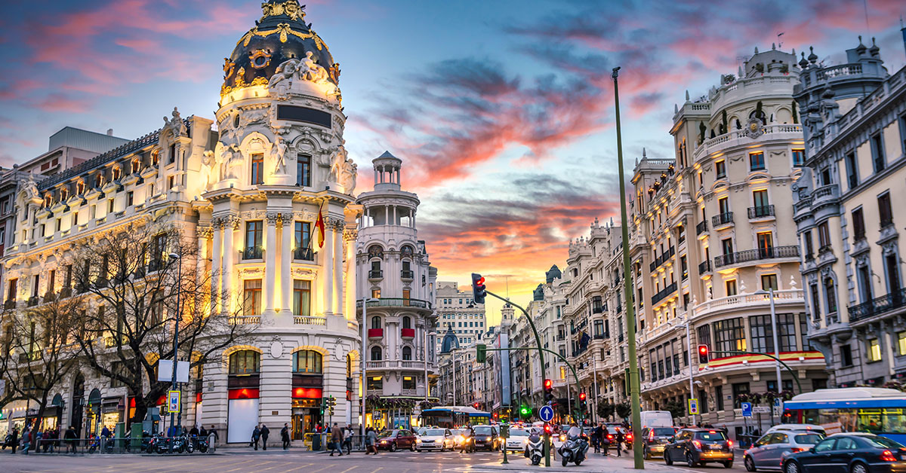

Benvenuti a Madrid!
La capitale spagnola offre una varietà di luoghi affascinanti da visitare. Ecco alcuni dei migliori:
- Palazzo Reale: Situato nel cuore della città, questo palazzo regale con oltre 3.418 camere è un must-see.
- Museo del Prado: Uno dei principali musei d'arte al mondo, con opere dal XVII secolo.
- Plaza Mayor: Una piazza storica circondata da edifici in stile barocco.
- Parco de El Retiro: Un grande parco con laghi, giardini e monumenti.
- Palacio de Cristal: Una struttura di vetro e metallo all'interno del parco Retiro.
- Stadio Bernabeu: Casa del Real Madrid, perfetto per gli amanti del calcio.
- Museo Reina Sofia: Arte contemporanea e opere di artisti come Picasso e Dalí.
- Tempio di Debod: Un antico tempio egiziano situato in un parco.
- Mercato di San Miguel: Un mercato coperto con deliziosi cibi e bevande.
- Museo Thyssen-Bornemisza: Opere d'arte da tutto il mondo.
